差不多先生 · 漫画回读
漫画台词是图像改编。引用与作答请用旁边课文原句。
第1段
有这么一个人，可以说是人人皆晓，处处闻名。他姓差，名不多。你一定见过他，一定听别人谈起过他。
第2段
差不多先生的相貌和你和我都差不多。他有一双眼睛，但看得不太清楚；有两只耳朵，但听得不太分明；有鼻子和嘴，但他对于气味和口味都不太讲究。他的脑子也不小，但他的记性却不太好。他常常说：“凡事只要差不多就好了，何必太精明呢？”
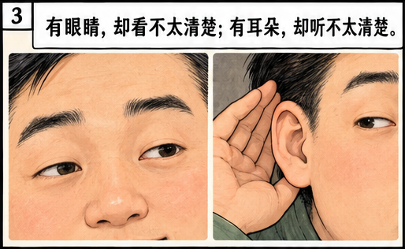
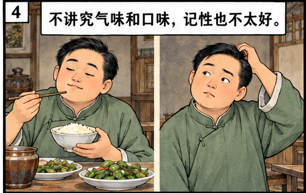
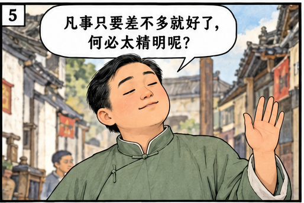
第3段
他小的时候，他妈妈叫他去买红糖，他买了白糖回来。妈妈骂他，他摇着头说：“红糖白糖不是差不多吗？”
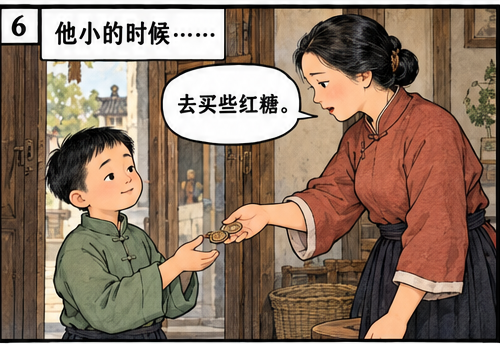
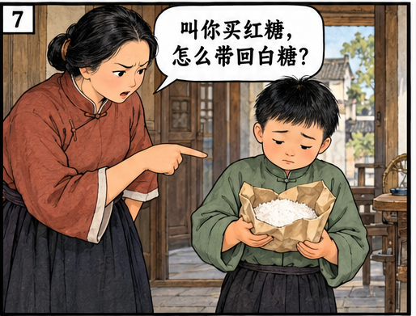
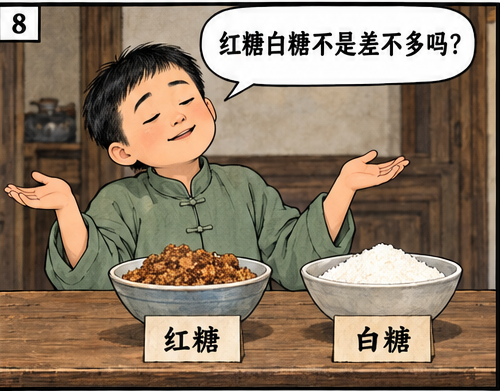
第4段
后来他在一家当铺里做伙计。他会写，也会算，只是记账很粗心。“十”字常常写成“千”字，“千”字常常写成“十”字，害得店里亏了不少钱。掌柜急得骂他，他却笑嘻嘻地说：“‘千’字比‘十’字只多一小撇，不是差不多吗？”
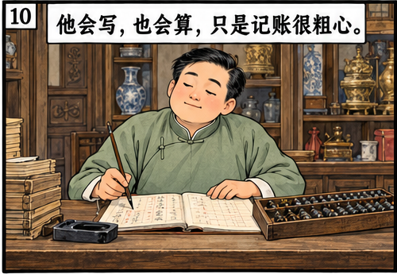
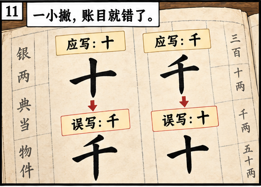
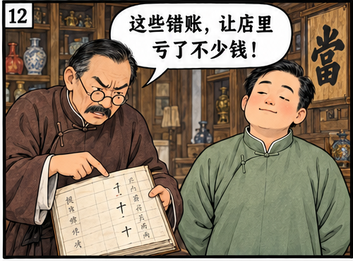
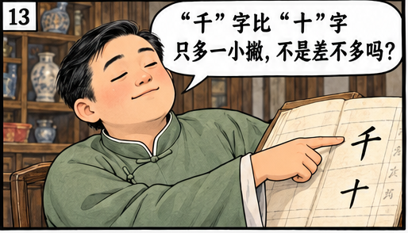
第5段
有一天，他为了一件重要的事，要乘船到外地去。他慢条斯理地走到码头，结果迟了两分钟，轮船已经起航了。他没有办法，望着远去的轮船，摇摇头道：“只好明天再走了，今天走同明天走，也还差不多。可是轮船公司未免太认真了。8点30分开船，同8点32分开船，不是差不多吗？”他一面说，一面慢慢地走回家，心里不明白为什么轮船不肯等他两分钟。
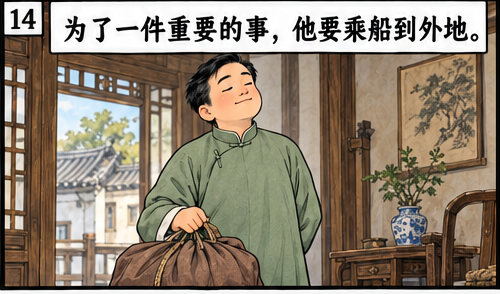
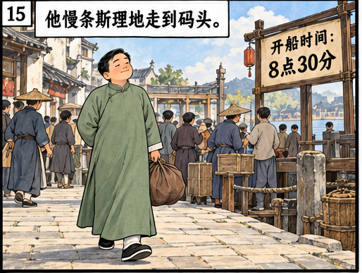
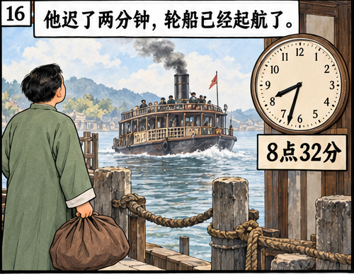
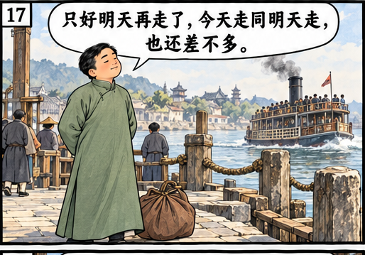
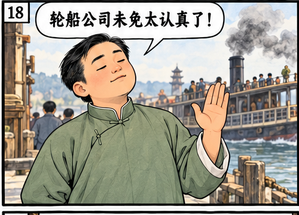
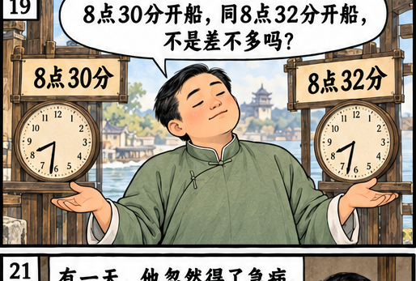
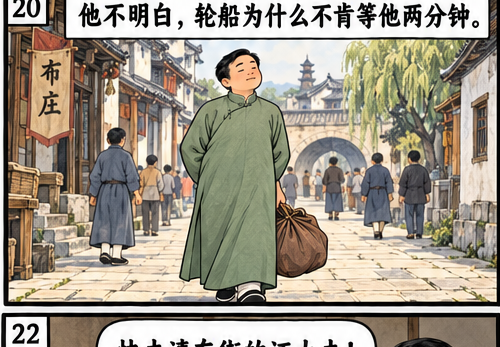
第6段
有一天，他忽然得了急病，赶快叫家人去请东街的汪大夫。家人急急忙忙地跑去，一时找不着东街的汪大夫，却把西街的兽医王大夫请来了。差不多先生躺在床上，知道找错了人，但病急了，身上痛苦，心里焦急，等不得了。他想：好在王大夫同汪大夫也差不多，让他试试看吧。于是这位王大夫走近床前，用医牛的方法给差不多先生治病。结果不到一个小时，差不多先生就一命呜呼了。
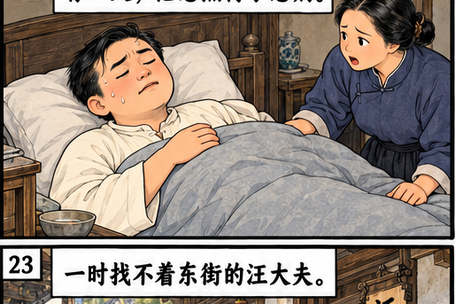
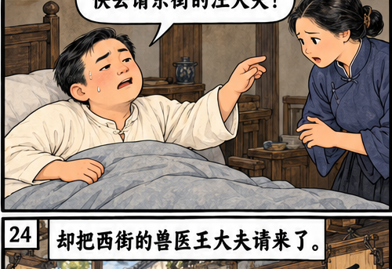
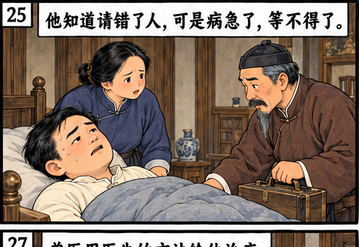
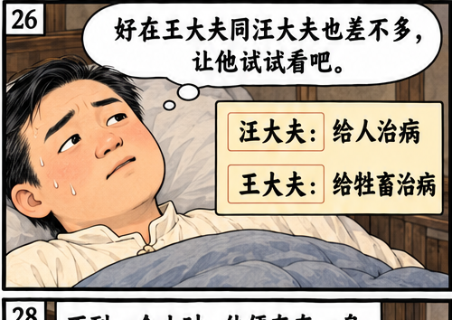
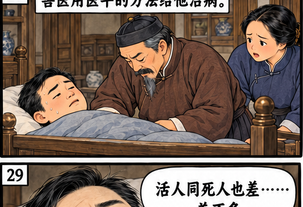
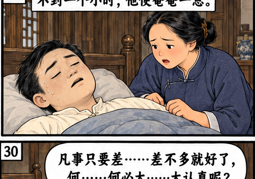
第7段
差不多先生差不多要死的时候，断断续续地说：“活人同死人也差……差不多。凡事只要差……差不多就好了，何……何必太……太认真呢？”他说完这句话，就断气了。
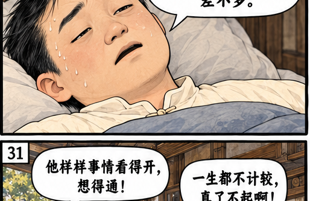
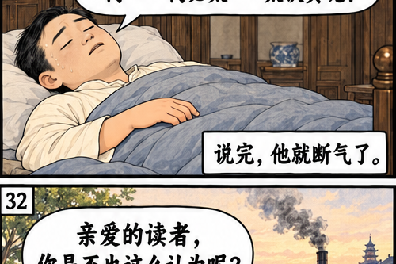
第8段
他死后，很多人都称赞他样样事情看得开，想得通，还对人说，差不多先生一生都不计较，什么事情差不多就好，真是了不起啊！亲爱的读者，你是否也这么认为呢？
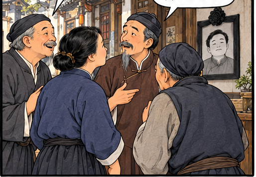
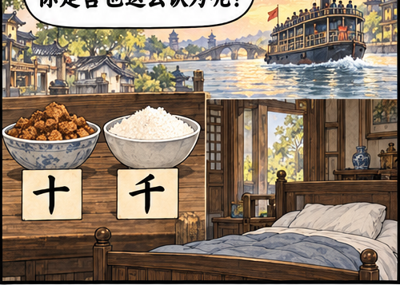
完整原漫画
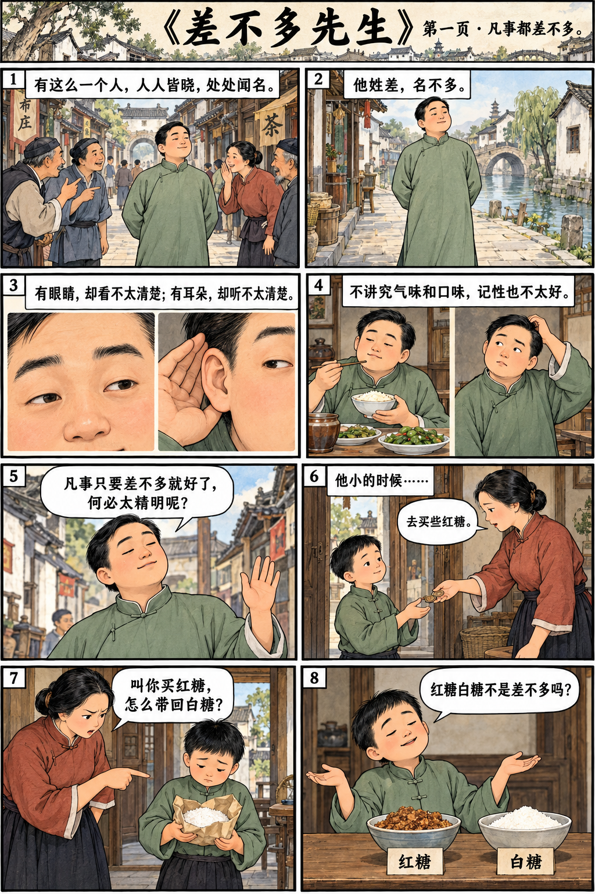
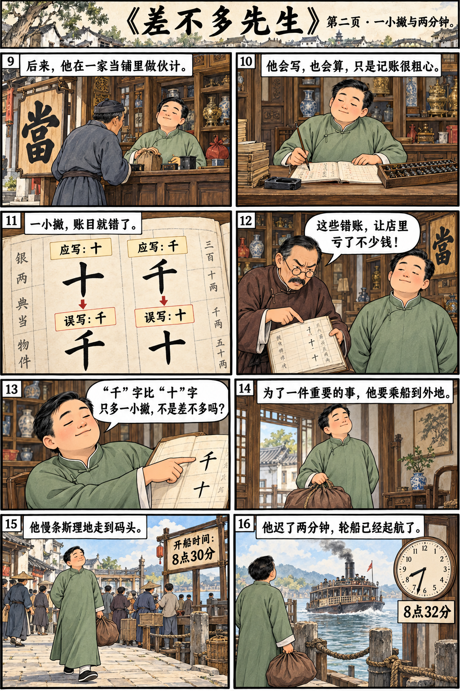
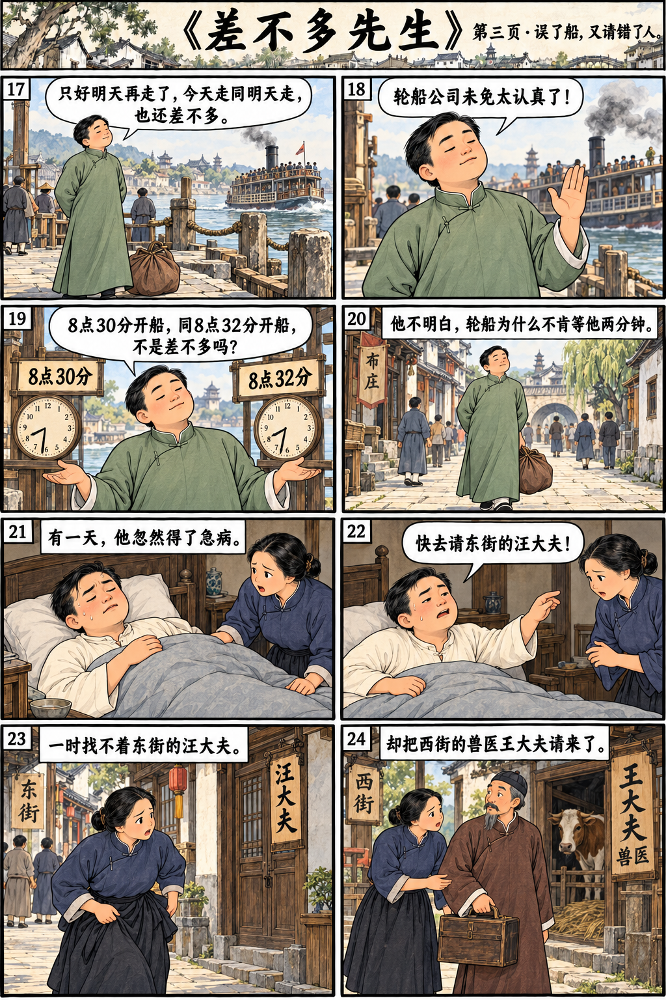
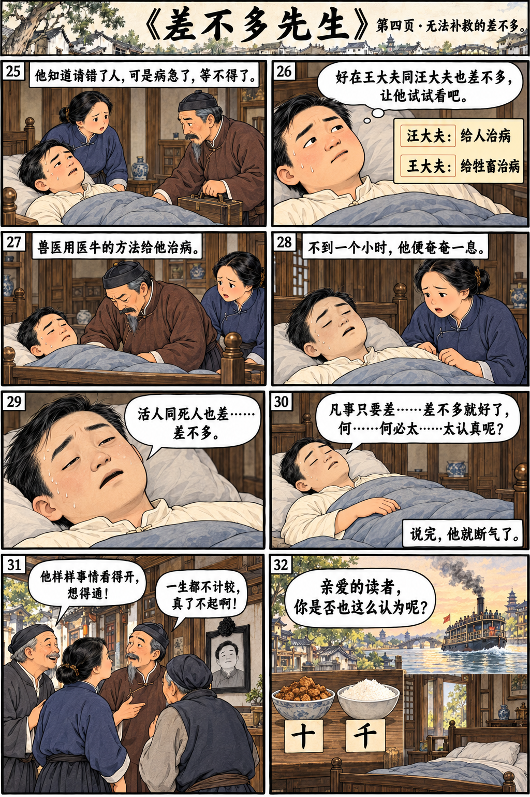